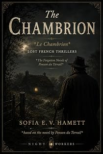

Le Chambrion
by Pierre-Alexis Ponson du Terrail · translated by Sofia E. V. Hamettpar Pierre-Alexis Ponson du Terrail · traduit par Sofia E. V. Hamett
The bookLe livre
"Off you go that way, Gendarme, and straight home with you." A boy of fifteen or sixteen is talking to a dog, one October evening in the eighteen-sixties, at the edge of a wood near Salbris in the Sologne. The dog understands perfectly: he turns on his heels, puts his tail between his legs, and instead of crossing the fields slips down out of sight. Poaching, and everything that follows from it.
« Va-t'en par là, Gendarme, et rentre tout droit à la maison. » Un garçon de quinze ou seize ans parle à un chien, un soir d'octobre des années 1860, à la lisière d'un bois près de Salbris, en Sologne. Le chien comprend parfaitement : il tourne les talons, met la queue entre les jambes et, au lieu de couper à travers champs, se glisse hors de vue. Le braconnage, et tout ce qui s'ensuit.
From the opening pagesLes premières pages
The Hare and the Hayloft
“Off you go that way, Gendarme, and straight home with you.”
So spoke a boy of fifteen or sixteen, one evening in October of the year 186—, at the edge of a wood not far from Salbris, the chief town of its canton in the Sologne.
He was speaking to a dog, who understood him perfectly well, no doubt, because he turned on his heels, put his tail between his legs, and instead of going off across the fields slipped down into a ditch and followed it the way a fox does.
As for the boy, he hid his gun in a bush and plunged into the wood, running until his lungs burned and telling himself: If I can get to the Chambrion’s before that damned Maupert, the keeper at les Clappier, catches up with me, I am saved. And as he ran he was bundling into his smock a hare, still warm, that he had just killed and did not mean to give up. The wood was thick, but the boy crawled and ran and slid and jumped and went through the young coppice and the brush like a rabbit with a pack of fast little hounds behind it. In less than a quarter of an hour he came out at the edge of a clearing, with a small cottage standing in the middle of it and a thread of smoke coming off the roof.
There was daylight still, but night was not far off — a wet, cold night of the kind October brings to that feverish, melancholy country of the Sologne.
The little poacher crossed the clearing in three bounds, reached the door of the cottage, put his hand on the latch and flung himself inside, shouting: “Save me, Chambrion!”
A man was sitting in front of a fire of oak roots and pine branches. It burned well enough to light, along with the last of the daylight, the inside of the cottage and the pages of a book that the man was slowly turning when the boy burst in on him. He put the book down on a chopping block beside him and stood up.
“Ah. It is you, Brocard,” he said. “A keeper is after you, you are afraid of a summons, perhaps even of prison — and you think that by taking shelter here you will be out of danger.”
“You can save me if you want to, Chambrion,” said the boy.
“That depends. If it is a government keeper —”
“No,” said the one he had called by that odd name of Brocard. “It’s Maupert. The keeper to that blackguard old Clappier.”
At the name, the owner of the cottage started; a cloud went over his face, and a flash of dark hatred showed in his eyes.
“Sit down there,” he said, “and get warm.”
“But if Maupert comes —”
“Maupert never comes in here.”
“But my hare —”
And the boy let the hare drop on the beaten earth floor. The Chambrion picked it up, took a knife out of his pocket, cut a slit in the left leg between the bone and the tendon, passed the right leg through the opening, and hung the hare up under the mantel of the chimney.
“Well,” he said, “am I not entitled to a hare in my own house, seeing that the people at the château have taken out a shooting licence for me, and that we are here under the woods that come down from les Sapinières?”
As the Chambrion was speaking, a confusion of voices and hurrying feet was heard outside.
“That’s Maupert,” said the boy, who was still shaking a little.
“If it is him, he is not alone, at any rate.”
The steps and the voices did come closer, and the Chambrion put his face to the frame of oiled paper that served him for a window and looked out.
Two men with guns were coming into the clearing. One had a beard already going grey; he wore a blue smock, and across it the broad strap and metal badge of a keeper’s game bag. The other was a young man of twenty-seven or twenty-eight in a bottle-green velvet shooting jacket with a game pocket built into it, tall leather gaiters that came up to the knee, and one of those caps, velvet as well, that the trade calls a melon.
A hundred paces short of the cottage the two men appeared to hold a consultation, and the Chambrion, whose hearing was as good as his sight was sharp, caught the following exchange:
“Monsieur Hector, I would put my hand in the fire that the little brigand of a Brocard is in the Chambrion’s house.”
“Well then, we shall have to go and fetch him out of it,” answered the man in the melon cap.
“Then you go, Monsieur Hector. You know I never set foot in François Véru’s.”
“And why is that?”
“We had our reasons, back along.”
“Which is to say,” said Monsieur Hector, “that you picked a quarrel with him one day and he gave you a proper thrashing.”
“That’s as may be,” said the keeper sullenly.
“Well, I am going, and if the Brocard is there I will bring him out to you by the ear.”
“This time,” muttered the keeper, “I shall write my summons in such a way that he goes to prison. It’s a second offence.”
The young man in the shooting jacket took a few steps towards the cottage.
The Chambrion turned round then and silently showed the little poacher a ladder set against the wall, which connected the ground floor of his house with the hayloft. The boy went up it as nimbly as a cat and disappeared into the loft, letting the trapdoor fall shut behind him. When the trap had come down, the Chambrion lifted the ladder away, laid it flat behind the door, then came and sat down quietly by the fire again and picked up the book that had been in his hand a moment before.
This Chambrion, who answered to the name of François Véru, was a fellow of twenty-eight or thirty, of middle height, square in the shoulder, with a broad forehead, a calm blue eye, and a face that was forceful and at the same time full of a melancholy gentleness. He was a peasant, but a less coarse peasant than the rest, to judge by the fineness of his hands and the care he took of his large light-brown beard.
His cottage, which was a single room, was a model of cleanliness and order. The bed, made up in one corner, was hung with figured Rouen cotton; a chest of old pear-wood held plain crockery scoured to a shine; a few pieces of tinned copper hung on the walls, and above the fireplace a gun and a hunting knife. Finally — and this was characteristic enough — in one corner stood a small set of shelves carrying a dozen volumes of various sizes, some bound, some in paper covers. The Chambrion was a reader. He set himself to learn any number of things out of books through the long winter evenings, in the season when there was no work.
The excerpt ends here — about 1,211 words of the published edition.L'extrait s'arrête ici — environ 1,211 mots de l’édition parue.
KindlePaperbackBrochéContextContexte
Rocambole made Ponson du Terrail famous and then swallowed the rest of his work. He wrote dozens of other novels — the Second Empire demi-monde, forest melodramas, police memoirs, Regency intrigue, Orientalist serials — and almost none of them survived in English. Lost French Thrillers recovers them, in the order they can be edited, with the same care given to the Rocambole cycle.
Rocambole a rendu Ponson du Terrail célèbre, puis a englouti le reste de son œuvre. Il a écrit des dizaines d'autres romans — le demi-monde du Second Empire, des mélodrames forestiers, des mémoires de police, des intrigues de la Régence, des feuilletons orientalistes — et presque aucun n'a survécu en anglais. Lost French Thrillers les exhume, dans l'ordre où ils peuvent être établis, avec le soin donné au cycle de Rocambole.
The whole programmeTout le programme